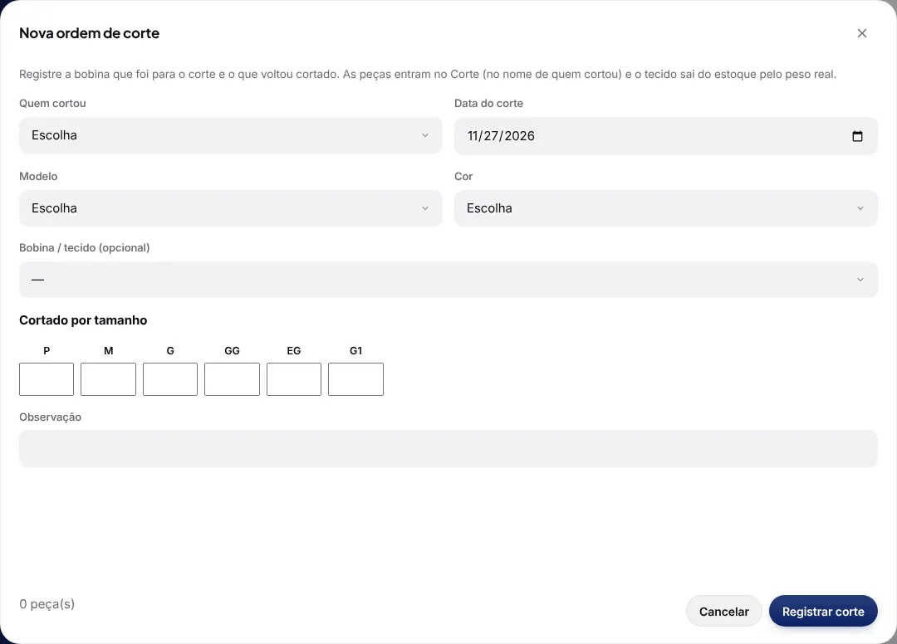
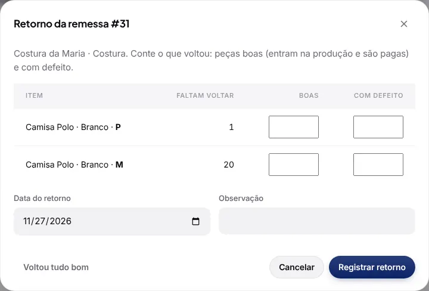
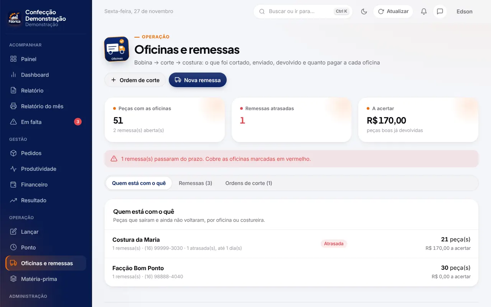
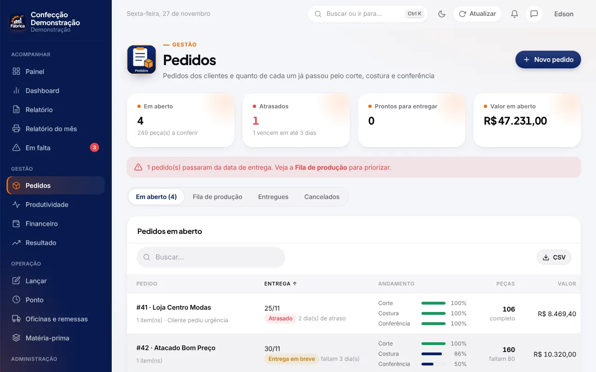
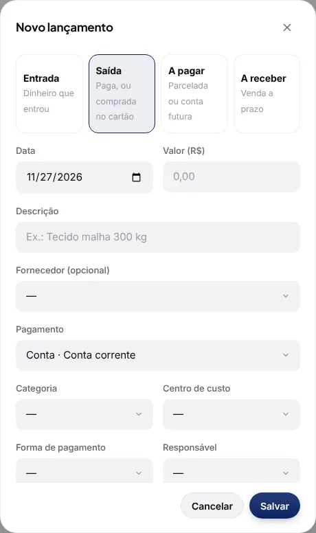
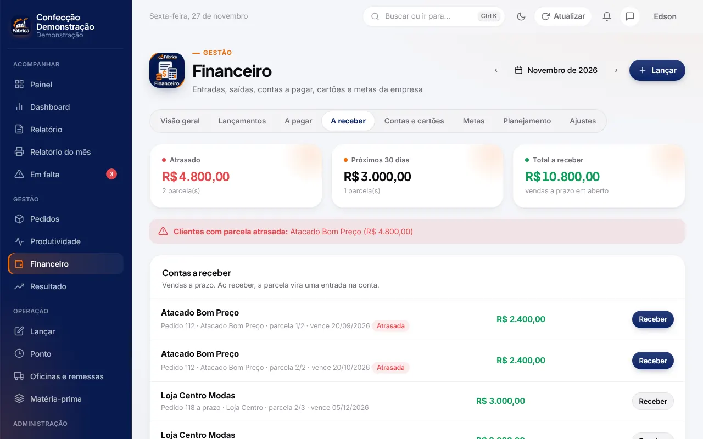
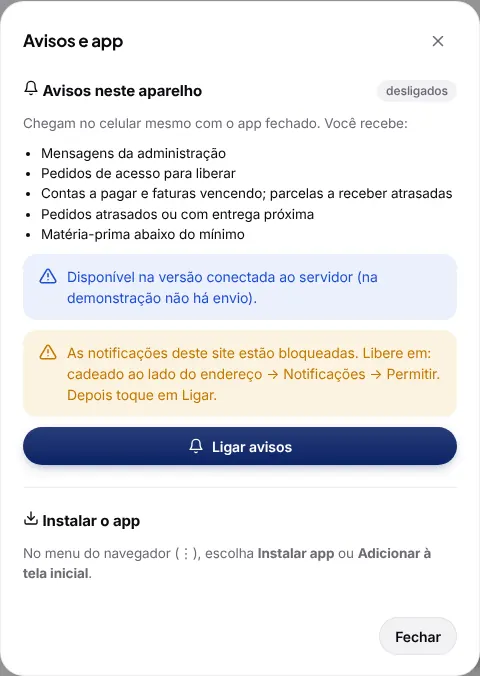
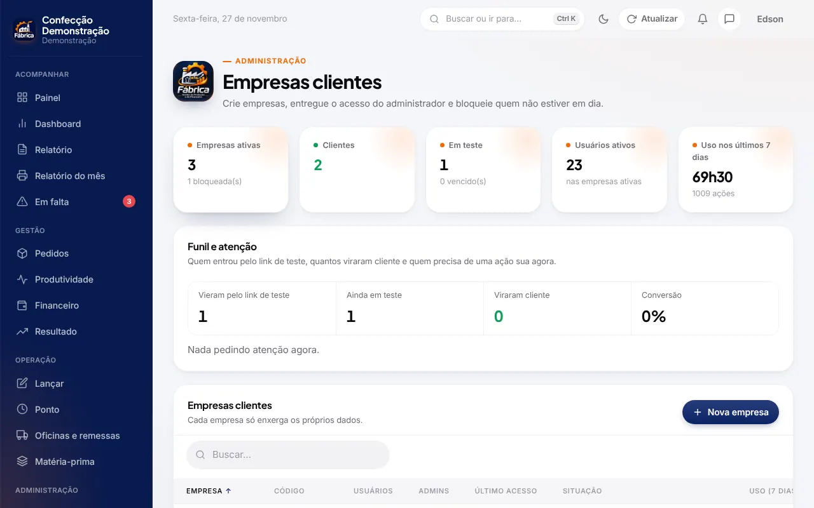

1 Primeiro acesso
- Abra fabricapremium.vercel.app no celular ou no computador.
- Preencha Empresa (o código da empresa, por exemplo
fabrica), Login e Senha. Tanto faz digitar com acento ou maiúscula:Fábricaefabricafuncionam igual. Toque no olho para ver a senha que está digitando. - Para a equipe não precisar digitar o código, mande o link já com a empresa:
fabricapremium.vercel.app/?e=fabrica. - Instale o app: toque no sino no topo e em Instalar o Fábrica. No iPhone: Safari → Compartilhar → Adicionar à Tela de Início.
- No mesmo sino, toque em Ligar avisos para receber pedidos de acesso, mensagens e o resumo das 8h no celular.
- Troque a senha inicial: clique no seu nome (canto superior direito) → Trocar senha.

Funcionários que não são administradores entram só depois que o administrador libera o acesso daquele aparelho (seção 11).
2 Montar a empresa
Faça nesta ordem, uma vez só. Tudo fica em Cadastros (menu Administração).
- Modelos, cores e tamanhos: a lista que aparece no Lançar, nos pedidos e nas remessas. Ex.: Camisa Polo · Preto, Branco · P, M, G, GG.
- Produtos: cadastre cada modelo com preço de venda e custo. O preço entra sozinho nos pedidos e os dois são usados no lucro por modelo. Ao salvar, o produto, as cores e os tamanhos vão para as listas.
- Funcionários: nome, login, senha e setor. O setor define a etapa que a pessoa lança: Cortador → Corte, Costureira → Costura, Conferente → Conferência. Clique no nome da pessoa para ligar ou desligar cada função do app só para ela.
- Oficinas: quem corta ou costura de fora (facção, costureira em casa). Informe o que faz, o valor por peça, telefone/WhatsApp e PIX.
- Clientes e Fornecedores: usados nos pedidos e no Financeiro (com histórico de compras de cada um).
- Bancos: ao cadastrar, marque “criar também como conta no Financeiro”.
- Em Matéria-prima, cadastre os tecidos e aviamentos com a regra de consumo (seção 6).
- Em Produtividade → Valor por peça, defina quanto se paga por peça em cada etapa (para funcionários pagos por produção).

3 Equipe no dia a dia
Ponto
Cada pessoa marca Entrada e Saída no celular. Se esquecer a saída, o ponto fecha sozinho no horário de fim do expediente e fica marcado no relatório.

Lançar produção
- Abra Lançar, escolha modelo e cor e digite a quantidade em cada tamanho.
- Confira o resumo e toque em Lançar. Se a etapa lançar mais do que a anterior entregou, o app avisa na hora.
- O próprio funcionário corrige os lançamentos do dia. Toda edição fica marcada e aparece em alerta no Painel.

Em falta
Lista do que precisa ser produzido primeiro. A baixa é automática: quando a conferência alcança a quantidade, o item é marcado como feito.
4 Corte e costura com oficinas
Menu Operação → Oficinas e remessas. É aqui que a conta fecha por oficina e por remessa: o que saiu, o que voltou bom, com defeito e o que está faltando.
Bobina → ordem de corte (cortador) → remessa (costureira) → retorno (boas e com defeito) → acerto (pagamento). Cada passo alimenta a produção, o estoque e o Financeiro automaticamente.
Passo 1 · Ordem de corte: a bobina e o que foi cortado
- Toque em Ordem de corte.
- Escolha quem cortou (oficina ou funcionário), o modelo e a cor.
- Em Bobina / tecido, escolha o tecido e informe quanto foi usado (kg ou metros da bobina).
- Digite quantas peças foram cortadas em cada tamanho e toque em Registrar corte.

Rendimento da bobina. O app compara com a regra do tecido. Exemplo: 25 kg ÷ 0,25 kg por peça = 100 peças esperadas. Se o cortador entregou 90, a perda foi de 10%, mostrada em vermelho quando passa de 5%.

Passo 2 · Remessa: mandar as peças para a costureira
- Toque em Nova remessa e escolha para quem vai. O valor por peça vem do cadastro da oficina.
- Informe o prazo de devolução e, se quiser, o desconto por peça faltando (cobrado no acerto).
- Em Peças de uma ordem de corte, escolha a ordem para preencher a grade sozinho, ou digite modelo, cor e tamanhos.
- Toque em Registrar envio. Abra a remessa e use Comprovante (imprimir e assinar) ou WhatsApp (manda a lista para a oficina).

Passo 3 · Retorno: conferir o que voltou
- Abra a remessa e toque em Registrar retorno.
- Para cada tamanho, digite as peças boas e as com defeito. Se voltou tudo certo, use Voltou tudo bom.
- Pode registrar em várias vezes (parte hoje, parte amanhã). O app não aceita voltar mais do que foi enviado.

Passo 4 · Acerto: fechar a conta e pagar
Toque em Acertar. O app mostra a conta e, se você tiver o Financeiro, lança o pagamento como saída na categoria Facção, ligada à oficina.
Exemplo: 80 boas × R$ 2,50 − 8 faltando × R$ 10,00 de desconto = R$ 120,00. Defeito não é pago nem descontado: volta para conserto ou perda.

Passo 5 · Quem está com o quê
A primeira aba mostra, por oficina, quantas peças ainda estão com ela, quantas remessas passaram do prazo e quanto há para acertar. Todo dia às 8h, quem tem a função recebe aviso das remessas atrasadas.

- Retorno errado: abra a remessa e exclua o retorno (a produção dele sai junto); registre de novo.
- Remessa já acertada: Reabrir tira o pagamento do Financeiro.
- Ordem de corte errada: exclua (se ainda não tiver remessa); o corte sai da produção e o tecido volta ao estoque.
- Lançamentos que vieram de ordem ou remessa não são editados no Lançar: corrija aqui.
5 Pedidos de clientes
Menu Gestão → Pedidos.
- Novo pedido: cliente, data de entrega, modelo, cor e quantidades por tamanho. O preço vem do cadastro do produto.
- O andamento (Corte, Costura, Conferência) é calculado sozinho pela produção lançada. Quando dois pedidos pedem a mesma peça, a produção vai primeiro para a entrega mais próxima.
- A aba Fila de produção diz o que falta cortar, costurar e conferir, em ordem de entrega.
- Ao Entregar, escolha lançar no Financeiro como a receber em parcelas ou recebido à vista.


6 Matéria-prima
Menu Operação → Matéria-prima.
- Novo material: nome, unidade (kg, m, un, cone), estoque mínimo e a regra de consumo: quanto cada peça gasta e em qual etapa. Ex.: Malha moletom · Corte · Moletom Canguru · 0,6 m.
- Entrada: registre a compra com valor e fornecedor; dá para lançar direto no Financeiro. O custo médio é calculado sozinho.
- O estoque baixa sozinho pela produção (ou pelo peso real informado na ordem de corte). Apagou uma produção? O material volta.
- Contagem: informe quanto há na prateleira; o app registra a diferença como ajuste.

7 Produtividade e pagamento por produção
Menu Gestão → Produtividade.
- Por pessoa: peças no período, por dia e por hora (usando o ponto).
- Valor por peça: valor geral de cada etapa e valores específicos por modelo.
- Pagar produção: escolha a conta e a data; cada pessoa vira uma saída em “Folha de pagamento” e o período fica marcado como pago (não paga duas vezes). Dá para desfazer em Pagamentos do período.

Oficinas são pagas pelo acerto da remessa (seção 4), não por aqui.
8 Financeiro
Menu Gestão → Financeiro. Botão Lançar no topo.
| Tipo | Quando usar |
|---|---|
| Entrada | Dinheiro que entrou na conta (escolha o cliente). |
| Saída | Pagamento feito ou compra no cartão (escolha o fornecedor). |
| A pagar | Compra parcelada ou conta futura: parcelas com dia de vencimento. |
| A receber | Venda a prazo: o cliente paga em parcelas. |

- Visão geral: saldo, entradas e saídas do mês, a pagar e a receber, gastos por categoria, quem mais pagou e para quem mais pagamos.
- A pagar e A receber: cada parcela com botão Pagar ou Receber; parcela recebida vira entrada do cliente. Clientes atrasados aparecem em vermelho.
- Contas e cartões: compras no cartão entram na fatura pelo dia de fechamento e só saem da conta quando a fatura é paga.
- Metas e Planejamento: dinheiro guardado e previsão do mês por categoria.

9 Resultado e lucro
Menu Gestão → Resultado.
- Preencher mês: faturamento, impostos, custos e despesas do mês (DRE gerencial). A Visão geral mostra receita líquida, lucro bruto, resultado e margens.
- Lucro por modelo: peças prontas × (preço − custo do material − mão de obra por peça). Mostra o mais e o menos lucrativo e o que foi vendido em pedidos.

10 Acompanhar a fábrica
- Painel: produção e presença de hoje, lançamentos editados e itens em falta. Atualiza sozinho a cada minuto.
- Dashboard: gráficos do mês comparados com a média dos meses anteriores.
- Relatório: produção, presença, horas extras e faltas por período (exporta CSV).
- Relatório do mês: tudo em uma página. Salvar em PDF gera um A4 para o contador ou sócio; Enviar resumo manda um texto curto pelo WhatsApp.


11 Acessos e segurança
- Quando alguém entra num aparelho novo, aparece no topo “pessoa quer entrar”. Toque em Liberar, Liberar e confiar (o aparelho entra direto nas próximas vezes) ou Negar.
- Acessos mostra quem está online, sessões, aparelhos confiáveis e a Atividade: quem criou, alterou ou apagou o quê.
- Em Cadastros → Funcionários, clique no nome para escolher as funções de cada pessoa (ex.: liberar Pedidos e Mensagens para o gerente).
- Cadastros → Cópia de segurança baixa todos os dados da empresa.

12 Avisos e mensagens
- Sino → Ligar avisos: chegam no celular mesmo com o app fechado. Pedidos de acesso, mensagens e o resumo das 8h (contas vencendo, recebimentos atrasados, pedidos e remessas atrasadas, material para comprar), conforme as funções de cada pessoa.
- Mensagens (balão no topo): o administrador ou o gerente manda recado para uma pessoa ou para todos. “Importante” abre na tela de quem recebe, e dá para ver quem leu.

13 Dono do sistema
Menu Administração → Empresas (só para o responsável pelo sistema).
- Nova empresa: cria a empresa e o administrador dela.
- Gerar link TESTE: vale 7 dias contados do envio. Gerar link PRO: versão completa, sem prazo.
- Funil e atenção: quantos vieram pelo teste, quantos viraram cliente, testes acabando ou vencidos e empresas paradas, com botões +7 dias e Tornar cliente.
- Página de apresentação (
/?conheca): publique o link de teste grátis (o prazo conta do cadastro de cada empresa) e o seu WhatsApp. - Bloquear: a empresa perde o acesso na hora; os dados ficam guardados.

14 Dúvidas frequentes
- O funcionário não consegue entrar.
- Confira o código da empresa e o login. Se aparecer “aguardando liberação”, libere em Acessos ou na faixa do topo.
- A costureira não usa celular. Como fica?
- Cadastre-a como oficina e use Oficinas e remessas, ou lance por ela em Lançar → Quem fez.
- O estoque de tecido não bate.
- Confira a regra de consumo do material e faça uma Contagem: o app corrige o saldo e registra a diferença.
- O pagamento da oficina foi lançado errado.
- Abra a remessa, toque em Reabrir (o pagamento sai do Financeiro), corrija o retorno e acerte de novo.
- Saiu uma versão nova?
- O rodapé mostra a versão. Quando houver uma nova, toque em Atualizar no topo; “Novidades” lista o que mudou.
- Os dados de uma empresa aparecem para outra?
- Não. Cada empresa só enxerga os próprios dados, e o banco confere isso em toda operação.
Manual do Fábrica · versão 1.9 · as telas são do modo demonstração, com dados de exemplo.